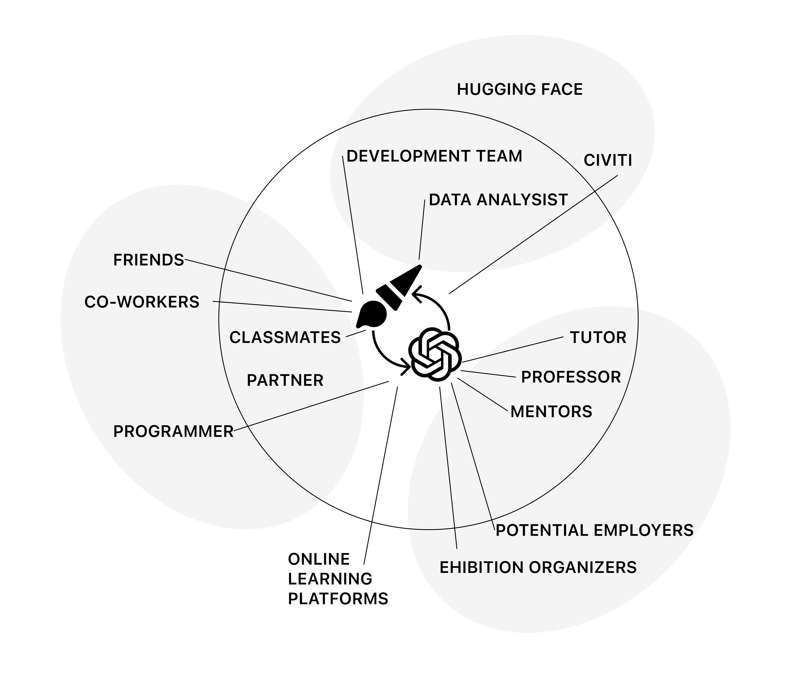
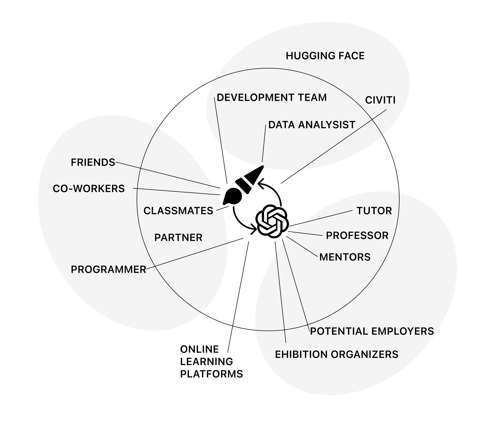

1 – Systems
What is the system?
The integration of AI technology has significantly enriched traditional education frameworks, enhancing connections between individuals and vast information. This approach facilitates more effective engagement with information, strengthening the learner’s ability to interact, absorb, and apply knowledge. I am particularly interested in how AI can transform BFA students into explorers of computational design.

 

Feedback Loops:
The system dynamics involve multiple feedback loops. A reinforcing feedback loop occurs when students use ChatGPT for idea generation, leading to more innovative projects and further use of the tool. However, over-reliance on ChatGPT can stifle creativity, prompting a balancing feedback loop that encourage independent work.
Stocks, Flows, and Delays:
Students’ accumulated knowledge and creativity, while flows include continuous input of ideas and feedback from ChatGPT and other stakeholders. Frequency and delay are evident in ChatGPT’s response times and students’ integration of feedback. My diagrams illustrate a streamlined human-AI collaboration design process, highlighting the importance of managing delays for effective learning outcomes.
Leverage Points and Hierarchy:
Key leverage points include the availability and quality of ChatGPT feedback. Enhancing these can significantly improve system efficiency. The hierarchy comprises individual students, interactions with classmates and professors, and integration into the broader art community. Boundaries are defined by ChatGPT’s current limitations and its role in art education.
Resilience:
As students keep their professional strengths without being overshadowed by AI, adapting to new technologies and methods to ensure continuous support for their creative processes. By optimizing these elements, feedback loops, and leverage points, this system can greatly enhance the educational experience for BFA students transitioning to computational design.

2 – Authorship
Authorship Philosophy in AI-Enhanced Design School Students in CAFA to create projects
To be more specific, the system focuses on how students at the Central Academy of Fine Arts' School of Design complete their portfolios, particularly integrating generative AI into various stages of creation: inspiration, research, analysis, workflow, framework building, technical implementation, visual presentation, drawing, and layout. Peers and professors are broadly defined as fellow graduate applicants and portfolio advisors.
I believe AI itself does not hold copyright, as within my system, few would use AI-generated content (AIGC) without modifications. Images, videos, and text generated by AI require refinement and personal input. Creators should be responsible for the content they generate. In this system, authorship levels are defined by the understanding of generative AI:
- Mass Authors: Undergraduates (especially before junior year) who may use AI tools with less customization.
- User Authors: Applicants in the application season who use AI tools extensively and customize their outputs.
- Program Authors: Computer science professionals who might develop agents and customize fine-tuning for this system.
Control within the system follows a hierarchical model where increased capability comes with greater responsibility.
Lock-in and Flexibility
In my system, the "lock-in" lies in the reliance on prompt engineering. This ensures that all stakeholders do not need to achieve breakthrough innovations but can work within the framework to create meaningful content—akin to the 3% principle proposed by former LV director Virgil Abloh, where slight variations lead to significant impact.
Comparison of Leading LLMs
In the past 10 years, Pinterest has been the primary platform for Design school students in CAFA seeking image inspiration. Whether high school students looking for artworks to study or those focused on portfolio creation in my system, Pinterest's strength lies in its ability to refine search results through image-to-image tag similarities. This approach is ideal for visual workers and remains relevant even with the advent of Generative AI-LLM.
ChatGPT-4
- Strengths: Widely recognized for its robust conversational abilities, extensive training data, and adaptability across different tasks.
- Authorship Model: Encourages user customization and interaction, allowing for significant user input and modification.
- Lock-in: Effective in creating a consistent and reliable interaction model but may limit innovative uses due to its predefined structures.
- Personal Experience: Best for everyday use and text-related tasks due to its multimodal capabilities.
Claude 3.5
- Strengths: Known for its ability to handle more complex tasks and nuanced conversations, often used in specialized applications.
- Authorship Model: Provides a balance between user customization and automated suggestions, suitable for users with varying levels of expertise.
- Lock-in: Provides a flexible framework for users but may encounter limitations in areas requiring high specificity and control.
- Personal Experience: Best for coding capabilities, suitable for beginners exploring the computational design field.
Google Gemini Advanced
- Strengths: Integrates seamlessly with Google’s ecosystem, offering powerful tools for research and information retrieval.
- Authorship Model: Emphasizes ease of use and accessibility, making it suitable for both novice and expert users.
- Lock-in: Highly flexible, allowing for broad applications, but may lead to dependency on Google’s ecosystem and tools.
- Personal Experience: Ideal as a learning aid, especially after coming to the U.S., when used within the Google ecosystem.
By balancing lock-in and flexibility, creating technologies that support innovation while maintaining reliability and user trust is possible. Considering the diverse needs of different user groups and fostering a model of authorship that encourages creativity and ethical use can greatly enhance the educational experience for students transitioning to computational design.
3 – Politics
Interview Quotes
Timestamp: 2024-07-25 03:06:02
Rating: 3
AI Tool Used: MidJourney app
Design Project Used For: Architectural projects
Most Helpful Thing About AI: Making intricate design details that would've otherwise taken forever to create manually. In architecture, a lot of iterations have to be made, and MidJourney made that iterative process significantly faster.
Timestamp: 2024-07-25 03:28:36
Rating: 3
AI Tool Used: ChatGPT
Design Project Used For: Portfolio website code review
Most Helpful Thing About AI: Speed
Timestamp: 2024-07-25 08:15:45
Rating: 4
AI Tool Used: ChatGPT and OpenAI API
Design Project Used For: Generative zine
Most Helpful Thing About AI: Ability to explain new libraries, write working code based on image or text descriptions, and allowed for experimentation and focus on higher-level concepts.
Timestamp: 2024-07-25 08:25:40
Rating: 5
AI Tool Used: Cursor
Design Project Used For: N/A
Most Helpful Thing About AI: Troubleshooting
Timestamp: 2024-07-25 08:56:03
Rating: 3
AI Tool Used: N/A
Design Project Used For: Converting massing to renders for client presentations
Most Helpful Thing About AI: Saved time
Timestamp: 2024-07-25 09:18:05
Rating: 4
AI Tool Used: AI (general)
Design Project Used For: Web design and architectural design
Most Helpful Thing About AI: Saved time
Timestamp: 2024-07-25 09:20:07
Rating: 3
AI Tool Used: ChatGPT
Design Project Used For: Organizing design ideas and finding useful tools
Most Helpful Thing About AI: Simplified the process and made techniques more accessible
Timestamp: 2024-07-25 09:22:54
Rating: 4
AI Tool Used: AI (general)
Design Project Used For: Rendering styles
Most Helpful Thing About AI: Helped with getting rough ideas and styles of renderings at the conceptual stage
Timestamp: 2024-07-25 09:26:11
Rating: 3
AI Tool Used: AI (general)
Design Project Used For: Preliminary stage of design
Most Helpful Thing About AI: Summarizing skills helped with seeing the big picture
Timestamp: 2024-07-25 10:09:12
Rating: 5
AI Tool Used: AI (general)
Design Project Used For: Developing briefs and plans of action
Most Helpful Thing About AI: Speed and organization
Timestamp: 2024-07-25 10:18:22
Rating: 3
AI Tool Used: ChatGPT
Design Project Used For: N/A
Most Helpful Thing About AI: Yes
Timestamp: 2024-07-25 12:24:34
Rating: 3
AI Tool Used: ChatGPT
Design Project Used For: Writing Arduino code for a drawing machine project
Most Helpful Thing About AI: Saved a lot of time
Average Rating of AI Tools
3.583333333